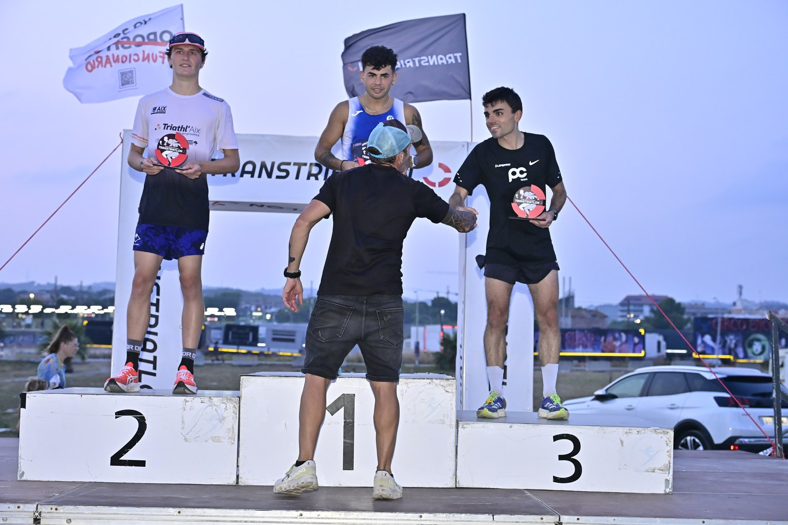

The inaugural Cunit Night Race was staged on the Passeig Marítim in Cunit, Tarragona, on Saturday evening, 25 July 2026. Organised by Club Deportivo Transtriatlón, the programme combined a 5-kilometre main race with 800-metre and 300-metre distances designed to bring younger age groups into the event.

Jackeline Gómez Mamian of C.A. Baix Montseny and Leo Contreras of Club Atletisme VNG took the women's and men's overall victories respectively in the 5K. The Ajuntament de Cunit described participation at the first edition as strong, while official classifications were published through Sportmaniacs.
The 800-metre and 300-metre races broadened the programme beyond the headline 5K, giving the seaside event a family and youth component in its debut year.
This event was covered for Image Media by correspondent José Ramón Moreno rather than the full team.